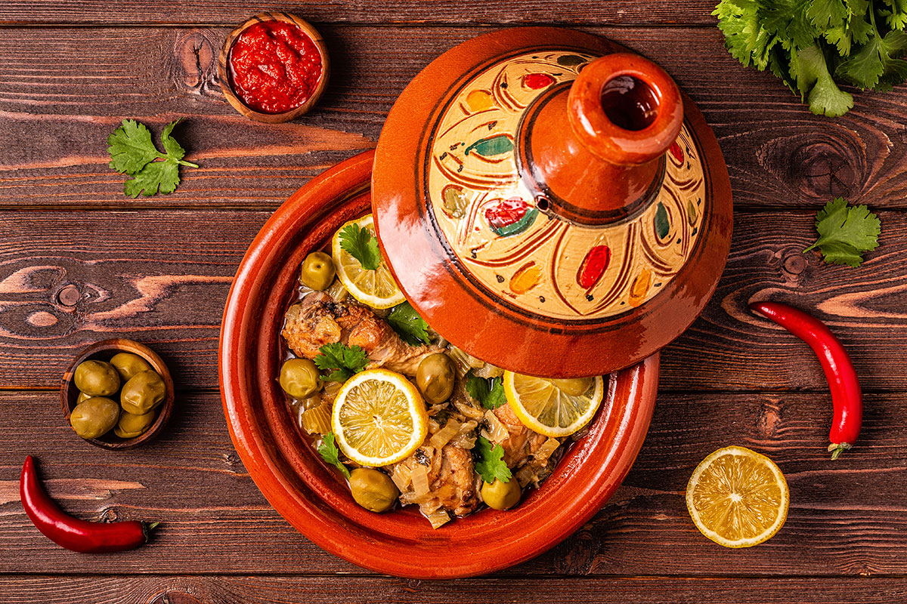
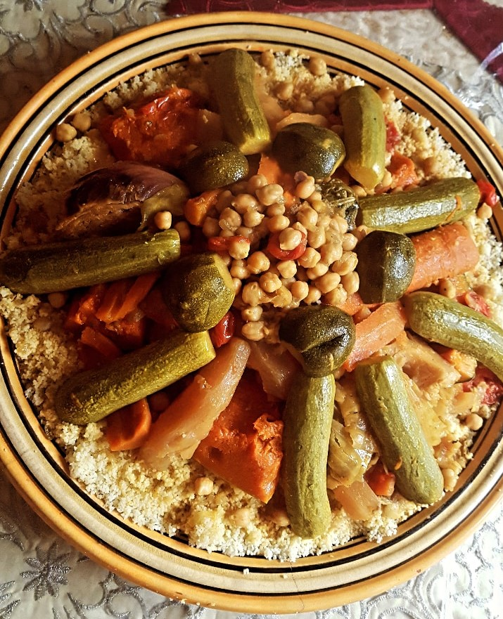
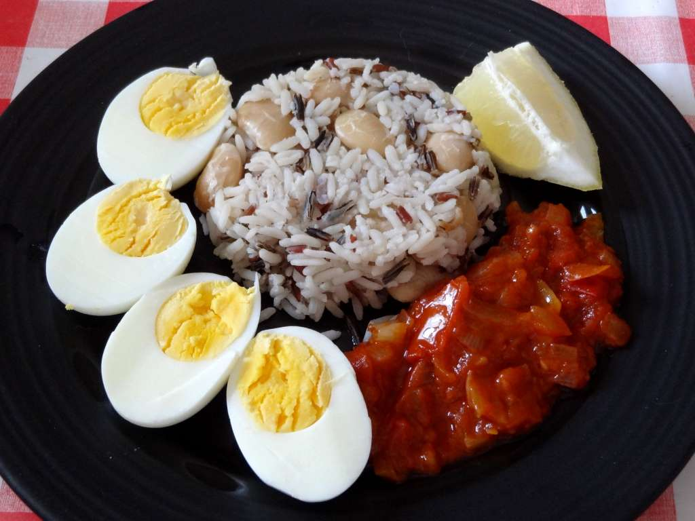

Choisissez parmis nos 04 plats les plus appréciés
| Plats marocains | Plats béninois |
|---|---|
 |
 |
| Tajine Traditionnel Marocain | Brochettes d'alloco |
 |
 |
| Couscous | Riz aux haricots blanc "Atassi" |